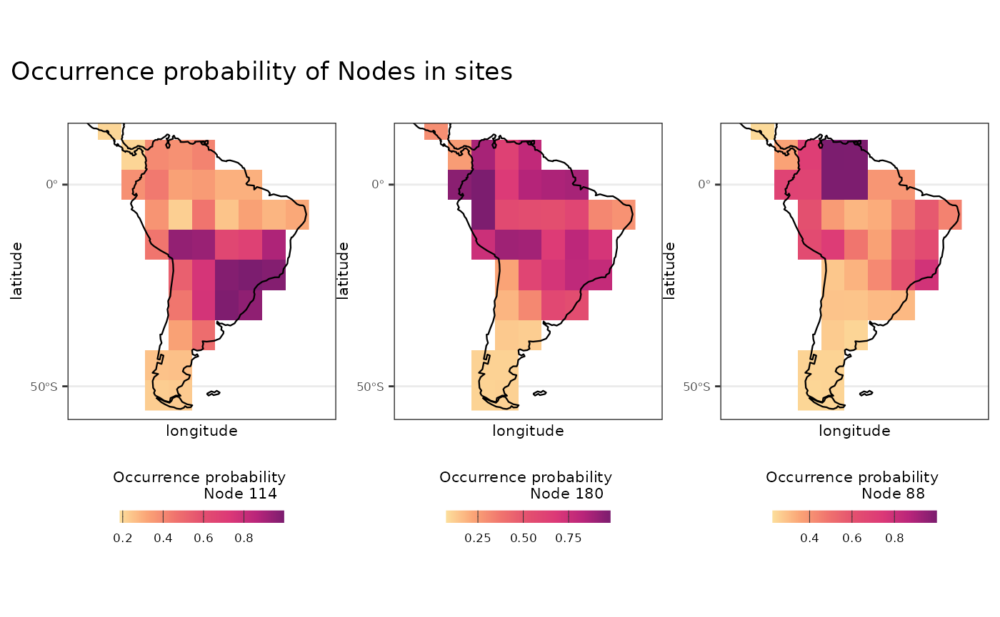

Introduction to SBEARS - Site Based Estimation of Ancestral Range of Species
Intro_sbears.RmdContext
Here we will demonstrate how to fit a model of ancestral area reconstruction called SBEARS (Site Based Estimation of Ancestral Range of Species) (Duarte et al 2025). SBEARS allows you to reconstruct ancestral ranges at finer spatial resolution (grids) without requiring any a priori definition of biogeographic regions. The output provides the spatial distribution of ancestral nodes in a user-friendly matrix format that can be used for other methods in community ecology and macroecology.
In SBEARS, the reconstruction is carried out based on the current
distribution of species across the geographic space of species belonging
to a monophyletic lineage. This information can be organized as an
occurrence/ presence-absence matrix of sites occupied by species. The
reconstruction is performed using a phylogenetic tree through a
stochastic evolutionary model based on a Brownian motion model,
implemented in the function fastAnc of phytools
R package. In this model, each site is treated as a binary categorical
trait representing the presence (state 1) or absence (state 0) of every
species in the site, which is reconstructed at the nodes of a
phylogeny.
This process is repeated for all sites (with each site corresponding to a different trait) and the final product is a matrix describing the probability value for each node to occur in each site of the grid. The probability is standardized to account for variation in the range size of nodes. This is the procedure called Single Site. There is also another option called Dispersal Assembly in which the reconstruction probability also depends on the probability of an ancestor occurring in a site dispersing to a neighboring site, given the geographical distance among sites weighted by a dispersal kernel function.
Next, we will show how these two methods can be used in the
Herodotools package, how to interpret the results of the
calc_sbears function, and how to visualize them.
Data
To perform SBEARS reconstruction, we need a community matrix, the geographical coordinates of these communities, and a phylogeny for the species occurring in the communities. As an example, we will use the same data used in Maestri et al (2019) and Duarte et al (2025) that comprise data on the occurrence and phylogeny of Sigmodontinae rodents. The community matrix corresponds to grids of approximately XX km².
library(Herodotools)
data("comm_sbears")
data("coords_sbears")
data("phy_sbears")Single site algorithm
To perform the single site algorithm, we can use the
calc_sbears function with the argument
method = "single_site".
out_single_site <- calc_sbears(x = comm_sbears,
phy = phy_sbears,
coords = coords_sbears,
method = "single_site",
compute.node.by.sites = TRUE,
make.node.label = TRUE)The calc_sbears function also supports parallel
computation via the package. This is recommended for large community
matrices, as computation time can otherwise be substantial. To run the
function in parallel, the user can proceed as follows:
# setting function to work in parallel according to user settings
library(future)
library(progressr)
# Detect safe max cores
ncores <- future::availableCores() # dynamic
safety_margin <- 1
workers <- max(1, ncores - safety_margin)
plan(multisession, workers = workers)
handlers("txtprogressbar") # terminal progress bar + timing info
out_single_site <- calc_sbears(x = comm_sbears,
phy = phy_sbears,
coords = coords_sbears,
method = "single_site",
compute.node.by.sites = TRUE,
make.node.label = TRUE)
# going back to sequential plan
future::plan(sequential)The function output is a list or a single matrix depending on the
arguments used in the function. If the user sets the argument
compute.node.by.site as TRUE the function returns the
output as a list with two elements:
- `reconstruction`: a matrix with ancestral nodes in rows and sites
in columns. The values represent the occupation probability of each
ancestral node in each site
- `site_node_composition`: a matrix with assemblage in rows and
node names in columns. The values represent the presence of a given
node in a given assemblage based on the occurrence of current species
representing that lineage in the sites.Dispersal Assembly algorithm
When using sbears with the Dispersal Assembly algorithm, two additional arguments must be specified: w_slope, which corresponds to the slope parameter used in the kernel function, and min_disp_prob, which defines the minimum dispersal probability of a node between two cells in geographic space.
out_disp_assembly <- calc_sbears(x = comm_sbears,
phy = phy_sbears,
coords = coords_sbears,
method = "disp_assembly",
w_slope = 5,
min_disp_prob = 0.8,
compute.node.by.sites = TRUE,
make.node.label = TRUE)The structure of the output for calc_sbears function
with dispersal assembly algorithm is the same as the one with the
single_site algorithm
Visualizing ancestral areas
We can use the objects from calc_sbears function to plot
the ancestral range of ancestral nodes.
library(dplyr)
#>
#> Attaching package: 'dplyr'
#> The following objects are masked from 'package:stats':
#>
#> filter, lag
#> The following objects are masked from 'package:base':
#>
#> intersect, setdiff, setequal, union
library(tidyr)
library(ggplot2)
# dense to long format
long_out_reconstruction <-
as.data.frame(as.table(out_single_site$reconstruction))
# naming data frame
colnames(long_out_reconstruction) <- c("nodes", "site", "prob.occurr")
# joining with coordinates
df_coords_sbears <-
coords_sbears |>
tibble::rownames_to_column("site")
# joining reconstruction with site coordinates
df_reconstruction_coords <-
long_out_reconstruction |>
left_join(df_coords_sbears, by = "site")
# for visualization
coastline <- rnaturalearth::ne_coastline(returnclass = "sf")
map_limits <- list(
x = c(-95, -30),
y = c(-55, 12)
)
theme_htools <- list(
ggplot2::geom_sf(data = coastline, size = 0.4),
ggplot2::coord_sf(xlim = map_limits$x, ylim = map_limits$y),
ggplot2::scale_x_continuous(n.breaks = 2),
ggplot2::scale_y_continuous(n.breaks = 2),
ggplot2::ggtitle(""),
ggplot2::theme_bw(),
ggplot2::guides(fill = ggplot2::guide_colorbar(barheight = ggplot2::unit(2.3, units = "mm"),
direction = "horizontal",
ticks.colour = "grey20",
title.position = "top",
label.position = "bottom",
title.hjust = 0.5)),
ggplot2::theme(
legend.position = "bottom",
plot.margin = unit(c(0.1, 0.1, 0.1, 0.1), "mm"),
text = element_text(size = 8)
)
)
# plotting node 114
plot_Node114 <-
df_reconstruction_coords |>
filter(nodes == "Node114") |>
ggplot2::ggplot() +
ggplot2::geom_raster(ggplot2::aes(x = longitude, y = latitude, fill = prob.occurr)) +
rcartocolor::scale_fill_carto_c(type = "quantitative",
palette = "SunsetDark",
direction = 1) +
ggplot2::labs(fill = "Occurrence probability
Node 114", title = "Node 114") +
theme_htools
# plotting node 180
plot_Node180 <-
df_reconstruction_coords |>
filter(nodes == "Node180") |>
ggplot2::ggplot() +
ggplot2::geom_raster(ggplot2::aes(x = longitude, y = latitude, fill = prob.occurr)) +
rcartocolor::scale_fill_carto_c(type = "quantitative",
palette = "SunsetDark",
direction = 1) +
ggplot2::labs(fill = "Occurrence probability
Node 180", title = "Node 180") +
theme_htools
# plotting node 88
plot_Node88 <-
df_reconstruction_coords |>
filter(nodes == "Node88") |>
ggplot2::ggplot() +
ggplot2::geom_raster(ggplot2::aes(x = longitude, y = latitude, fill = prob.occurr)) +
rcartocolor::scale_fill_carto_c(type = "quantitative",
palette = "SunsetDark",
direction = 1) +
ggplot2::labs(fill = "Occurrence probability
Node 88", title = "Node 88") +
theme_htools
# All plots
l_plot_prob_occ <- list(plot_Node114, plot_Node180, plot_Node88)
patchwork::wrap_plots(l_plot_prob_occ, nrow = 1, axes = "collect") +
patchwork::plot_annotation(title = "Occurrence probability of Nodes in sites")